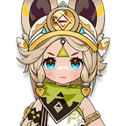
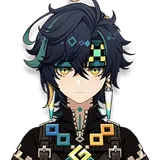

Chương V · Màn I
Sắc Hoa Rực Rỡ Trong Hành Trình Nắng Cháy
Nhiệm vụ Ma Thần — Natlan
Nhân vật xuất hiện
 Nhân vật chính · Nhà Lữ HànhLumineNhà Lữ Hành đến từ thế giới khác. Bị vị thần lạ mặt phong ấn và cướp mất người anh song sinh, cô bắt đầu hành trình đi tìm Bảy Vị Thần của Teyvat.
Nhân vật chính · Nhà Lữ HànhLumineNhà Lữ Hành đến từ thế giới khác. Bị vị thần lạ mặt phong ấn và cướp mất người anh song sinh, cô bắt đầu hành trình đi tìm Bảy Vị Thần của Teyvat. Bạn đồng hànhPaimonĐược Lumine cứu khỏi chết đuối hai tháng trước, Paimon tự nhận làm người dẫn đường cho cô. Hay ăn, hay nói, và rất ghét bị gọi là “thực phẩm dự trữ”.
Bạn đồng hànhPaimonĐược Lumine cứu khỏi chết đuối hai tháng trước, Paimon tự nhận làm người dẫn đường cho cô. Hay ăn, hay nói, và rất ghét bị gọi là “thực phẩm dự trữ”. Những người bạn FontaineCharlotte · Navia · Clorinde · FurinaTiễn chân Lumine và Paimon tại Cảng Romaritime trước khi khởi hành sang Natlan.
Những người bạn FontaineCharlotte · Navia · Clorinde · FurinaTiễn chân Lumine và Paimon tại Cảng Romaritime trước khi khởi hành sang Natlan.
Chiến binh Con Của Tiếng Vang · Tên Cổ UthabitiKachinaCô bé kiên cường vượt qua tự ti, bắt cặp cùng Mualani chiến thắng vòng loại và bước vào Trận Chiến Người Gác Đêm.- Chiến binh Cư Dân Suối NướcMualaniBạn thân của Kachina, đón chào Lumine bước vào Natlan và đưa mọi người về thăm quê nhà.

Thợ săn Dòng Dõi Vườn TreoKinichChiến binh lý trí tham dự Nghi Lễ Hành Hương Về Lửa Thánh cùng cộng sự Ajaw.- A“Thánh Long K'uhul Ajaw Toàn Năng”AjawSinh vật hai chiều ồn ào đồng hành bên Kinich.
 Hỏa Thần đương nhiệm của NatlanMavuikaChủ trì Nghi Lễ Hành Hương Về Lửa Thánh tại Đấu Trường.
Hỏa Thần đương nhiệm của NatlanMavuikaChủ trì Nghi Lễ Hành Hương Về Lửa Thánh tại Đấu Trường.- NChú Tepetlisaur nhỏNhóc ConBạn đồng hành Saurian đi theo Lumine và Paimon khắp Đấu Trường Lửa Thánh.
- AChiến binh kỳ cựu và thủ lĩnh Cư Dân Suối NướcAtea · AminaAtea giữ nụ cười kiên cường dù mang vết thương Vực Sâu nặng từ năm xưa; Amina dẫn dắt bộ tộc.
- PTộc trưởng Con Của Tiếng Vang & hồi ức MondstadtPacal · Cival · Lisa · VentiNhững nhân vật hỗ trợ tại đấu trường và hiện lên trong hồi tưởng về khả năng thanh tẩy Vực Sâu của Lumine.
Các phần
- Phần 1Natlan! Chuyến Hành Trình Mới
- Phần 2Nghi Lễ Hành Hương Về Lửa Thánh
- Phần 3Quê Hương Của Suối Nước Nóng
Toàn bộ lời thoại được lấy từ bản tiếng Việt chính thức của trò chơi. Ở những đoạn người chơi được chọn câu trả lời, truyện chọn một lựa chọn duy nhất.